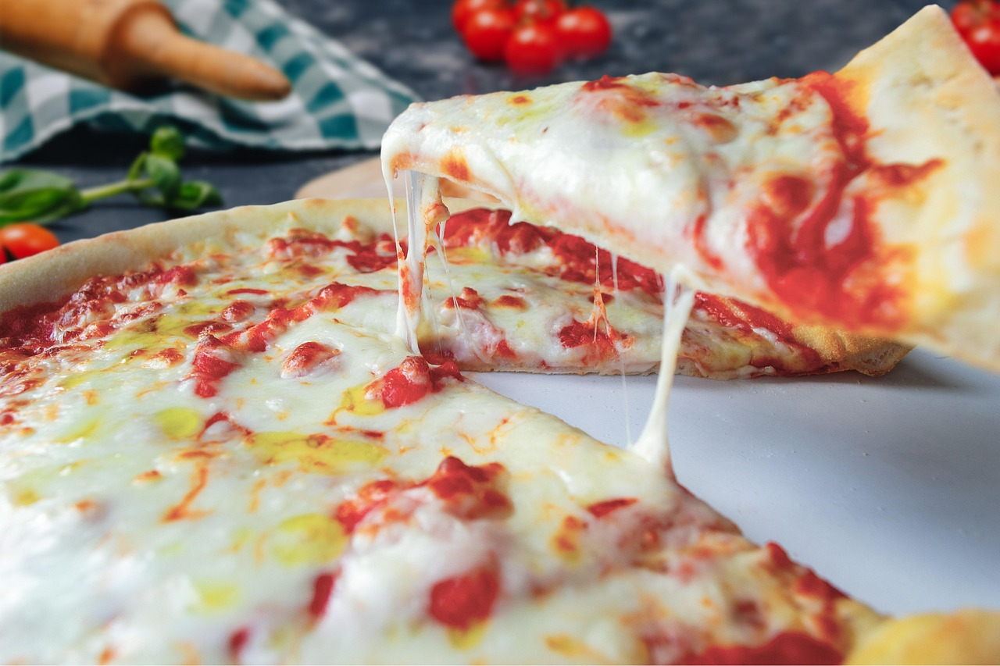

Margherita Pizza
Ingredients
Dough
- 500 g all-purpose or '00' flour
- 325 ml lukewarm water
- 10 g salt
- 3 g instant dry yeast (or 7 g fresh yeast)
- 1 tsp olive oil (optional, for smoother dough)
Toppings
- 200 g canned crushed tomatoes or passata
- 1 tbsp olive oil
- Salt to taste
- 250 g fresh mozzarella (e.g., mozzarella di bufala or fior di latte), sliced or torn
- Fresh basil leaves
- Olive oil for drizzling
- Optional: pinch of oregano
Instructions
Make The Dough
- In a large bowl, mix flour and salt.
- Dissolve the yeast in the lukewarm water. Pour into the flour gradually while mixing.
- Knead the dough for about 8-10 minutes until smooth and elastic.
- Cover and let rise in a warm place for 1-1.5 hours, or until doubled in size.
- Divide into 2 equal balls. Let rest for 15-20 min before shaping.
Prepare The Sauce
- Mix crushed tomatoes with olive oil and a bit of salt.
- No need to cook — Neapolitan-style pizza uses raw tomato sauce.
Assemble the Pizza
- Preheat oven to 250-270°C (or as hot as it gets) with a pizza stone or steel inside.
- On a floured surface, stretch one dough ball into a 25-30 cm circle.
- Spread tomato sauce thinly over the base.
- Add mozzarella pieces and fresh basil leaves.
- Drizzle a little olive oil over the top.
Bake
- Slide onto the preheated stone or tray.
- Bake for 7-10 minutes or until the crust is golden and the cheese is bubbly and slightly browned.